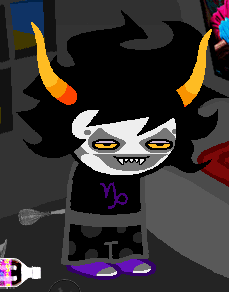
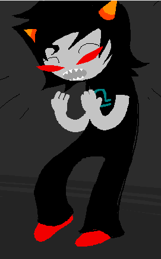
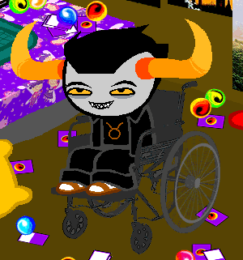

The troll planet and troll biology is really weird, but if any of it has significant meaning for the story so far, it went way over my head.
I super love GC/Terezi. Even after she started licking things, which tbh was super gross. But I read everything on my iPad laying in bed, so no in depth commentary for that.
Not sure why people love Karkat so much, at least so far, he’s just kind of annoying. Terezi is much, much better.
Now I’ve met Sollux! Sollux apparently made their version of Sburb from glyphs in some ruin. That is impressive. And also who the fuck coded a game in glyphs thousands of years ago?
Actually I know it probably was like the frog temple thing that got sent through time during the reckoning and landed there and maybe Sollux himself did the glyphs so later he could read them and make the game and time travel madness.
Hussie just has this amazing knack for puns, double meanings, symmetry, and parallelism. At least, that's the impression I get just from a cursory glance at everything troll. It's kind of like a game-- see if you can spot them all! (Note: Don't actually do that. Try shooting for a reasonable number instead. We've lost a lot of good, hard-working, dedicated fans to the Hussie Hunt. Let us have a moment of silence and a single tear of black liquid sorrow shed in their honor.)
TA: ii2nt that kiind of depre22iing? TA: the thought that they miight 2tay wiith you tiil you diie? AA: n0t really AA: im 0k with it AA: im 0k with a l0t 0f things AA: even 0ur inevitable failure AA: th0ugh it will briefly masquerade as vict0ry
Oh shit, I bet that the trolls our heroes were talking to were in that space between their faux-victory and inevitable failure. IIRC, they acted like they had succeeded, but…
Also, just how many of the trolls are hearing voices? Sollux is, And so is TA?
This whole time travel to set up one’s own creation/summoning is so very Bad Wolf (my fellow Who fans about?).
“In a reality he is known to have marked for predation” is an incredibly confusing clause. I’m not sure how to even make sense of it. But it does make me think of Bec and his head silhouette being carved on a pumpkin and on a wall in the exile’s world, which certainly contains people from a different time, at least.
You are known to be heavily arrested by FAIRY TALES AND FANTASY STORIES. You have an acute ability to COMMUNE WITH THE MANY CREATURES OF ALTERNIA, a skill you have utilized to CAPTURE AND TRAIN a great many. They are all your friends, as well as your warriors, which you pit in battle through a variety of related CARD AND ROLE PLAYING GAMES.
I wanna be the very best, like no one ever waaas (duh duh duh)
You used to engage in various forms of MORE EXTREME ROLEPLAYING with some of your other friends before you had an accident.
Like the accident that (it is implied) caused Terezi’s blindness?
You have had this interest far prior to your accident. Being paralyzed isn’t what made you want to be able to fly. That would be dumb and would make no sense.
Being paralyzed does sort of make you want to be able to walk, though.
Ha! Way to thumb your nose at common disability tropes, Mr. Hussie.
Here’s the trolls I’ve met so far and the opinions I have on them:
Karkat Vantas, CarcinoGeneticist, Red Team Leader
His annoyance with the world was a good deal cuter when he was an anonymous troll apparent only through text. He’s a lot to take as a main character in the troll arc, oh man. His arrogance about his hacking skills is kind of annoying, too. But he’s pretty much a typical tween: mad at the world. I want to have him sit down and take some deep breaths, and then break his capslock button. I may also just be disliking him to be contrarian since apparently the fandom loves him and I love to be different.

Gamzee Makara, TerminallyCapricious, Red team
I really want to know why his face looks like that. Does he paint it, since he’s obsessed with clowns, or does it naturally look that way? His custodian is the water dragon looking thing, whose death made me really sad, so I’ve got a soft spot for this obnoxious kid.

Terezi Pyrope, GallowsCalibrator, Red team
I’m on the record already loving this lady! I mean, how do you not love that face? And she’s obsessed with dragons and likes roleplaying and stuffed animals. I mean, okay, she pretends to execute her toys, but who hasn’t done that? And she’s going to use her cane to fight! Also she seems to have as little patience for Karkat’s antics as I do. Diagnosis: Queen of my heart!
Apparently she has some kind of special powers relating to her blindness and or coping with her blindness. And she can smell and taste words, which is both gross and awesome.
Apparently he’s just the coolest cat ever. He’s a great hacker, but he has low self esteem and beats himself up over things. He sent Karkat some kind of super virus curse to show off, which Karkat of course activated. He’s got two different colored eyes and likes to divide things up like that. He also has a “mutant brain.” I’m really not sure what any of that means yet. He can also see into the future.
He’s the kind of kid I want to wrap up in a blanket and hug, the poor guy. He’s clever and powerful but he seems pretty unhappy and really unsure of himself, and very scared.

Tavros Nitram, AdiosToreador, Red team
Like half the reason I like this guy is just the writing. He’s not an object lesson or pitiful, he’s just a guy in a wheelchair. He’s not just good with animals, he seems to have some kind of mind control over them. I’m looking forward to seeing him joust in the medium!
That’s all the trolls I’ve met so far, or at least learned their names properly. I’ve also met a floating girl who destroyed the frog (!) temple, and a lovely girl who is such a good friend she will take a chainsaw to Tavros’s legs so he can get new robotic ones.
Do you know about ICP (Insane Clown Posse) and their uhh... "hit" song "Miracles"? It's basically a requirement to know about them. /watch?v=_-agl0pOQfs
I don’t know the song, Insane Clown Posse grosses me out so much, but I will watch it now for Homestuck~
Oh, that’s not as bad as I was expecting! Gamzee makes so much more sense now, thank you for filling me in!
“CLOWNS OF A GRIM PERSUASION WHICH MAY NOT BE IN FULL POSSESSION OF THEIR MENTAL FACULTIES” I can’t believe I didn’t get that that would mean Insane Clown Posse. I feel very dumb now.
Well that’s really ominous. And there’s the Skaia logo thing with a button that’s about to be pressed. And poor Terezi had to be all by her lonesome because her lusus was keeping the giant skull from falling on the button?
Nepeta is so cute I do not know what to do with myself. Just lookit those widdle fangs and that kitty mouth!
You prowl the wilderness for GREAT BEASTS, and stalk them and take them down with nothing but your SHARP CLAWS AND TEETH! You take them back to your cave and EAT THEM, and from time to time, WEAR THEIR PELTS FOR FUN. You like to paint WALL COMICS using blood and soot and ash, depicting EXCITING TALES FROM THE HUNT!
AG: Make your move, make your move, make your move! AT: i JUST THINK, AT: tHESE MONSTERS ARE TOO STRONG, AT: sORRY, bUT, tHEY DON’T SEEM APPROPRIATE FOR THIS CAMPAIGN, AG: Weak! Weaky weaky weak. AT: uHH, AT: wEAKY, iS THAT A REAL, AT: tHING TO SAY, AG: Yes. Your 8l8tant excuse making is the weakiest lame that ever shit the coward 8ed. AG: Roll your dice. Make your move. AG: Advance or a8scond!
Oh shit, I have a bad feeling that ArachnidsGrip is about to feel like a terrible person really soon.
Oh, I really like Aradia too. She’s really pretty! And so mysterious. She plays everything close to the vest, doesn’t she?
The class element interests me. Apparently there’s a big divide between the upper class and lower class and a loooooot of animosity between them. I gather the upper class is called the blue bloods, and lower is green bloods? I wasn’t paying attention at first since blue blood is a standard term for the upper class. I guess Nepeta is a blue blood, but I don’t think I’ve gotten the names of anyone else. But aside from Nepeta they do seem like not the best people. Especially since AG is one of them. And AG is terrible.
At first I thought it was a time travel thing, that Sollux was hearing the voices of the trolls that died as a result of the game, the voices transported back through time. But then I went back and found that Karkat’s coding handbook was for the Imminently Deceased as well. I’m guessing it’s some sort of proto-god type thing, not like regular trolls but not the almighty, something powerful that dabbles in what the trolls are doing.
Vriska, I do not like you. Nope, not one bit. Boo. You hurt Tavros you jerk.
(The vision “eightfold” thing is interesting, too. She’s got vision eightfold, and Sollux has vision twofold. I thought that was just about him having two different colored eyes and liking things divided into twos, but I guess it’s more than that.)
White text guy without a screen name is scaring me.
I wonder if Vriska isn’t so horrible, if he’s been behind it and she’s–well, not blameless, but less to blame. She is like 12 and all gothic, and 12 year old goths are known to be malignantly stupid without being malicious.
I should be liveblogging more but I don’t want to stop hitting the next button to find out what happens next!
AG: Oh really, well you seemed pretty excited a8out killing Tavros too. AG: And you even helped! So I guess that is how you work after all. Not really. All I did was stand somewhere for a few minutes. I just gave you an opportunity to do something you wanted to do anyway. You hated him, remember? AG: I know I did! I still do, I guess. I dunno. AG: 8ut I was never gonna kill these people. They were like, off limits I guess? AG: These games were just supposed to 8e fun and serve no other purpose! They were serving a very important purpose. AG: Yeah ok, you getting off on talking a girl into killing her 8uddies sure is important! AG: Los8r.
(I bolded white text guy’s text.) Oh shit I am starting to feel really bad and get really worried for Vriska. Like okay he’s not forcing her to do anything but I get the feeling she’s been groomed by him somehow and wasn’t really doing it of her own volition. It seems very stereotypically abusive, y'know–manipulate someone into doing something and then telling them they did it because they chose to. A lot of gaslighting going on here.
Well, I guess we know who the virus demon is now. Does this mean Alternia has an England? Or is Earth with its England in the same universe as Alternia? And does Lord English operate inside or outside the game and Skaia? No theories here, just questions. :(
So now I get the vision eightfold thing, kind of. Must read further to find out how it works and how she lost it. I’m rolling my eyes at her complaining that she lost seven eyes while Terezi only lost two. Way to miss the point, young lady.
And now time for some out of order liveblogging, because I am so bad at this whole thing. I have zero discipline so I just kept reading on and was like, I will respond properly later.
Wait okay. People knew that Aradia was dead, and like, had no problem with continuing to chat with her? I mean, okay, they do have all kinds of psychic powers, and apparently ghosts can just show up and haunt people, but still, what kind of planet are they living on? Did just some of them think she was dead and not tell anyone else? Because Sollux clearly thought he could see Aradia if she was outside his window but later Doc Scratch says that Terezi thinks “their friend” is dead and Aradia is the only one I know of who would fit.
I guess CaligulasAquarium or CuttlefishCuller could be that friend, since I haven’t learned anything about them except their screen names.
Time to meet Equius Zahhak! He bosses Nepeta around and is apparently Slytherin. Because he’s obsessed with blood purity.
Also he seems kinda kinky. Which I dislike saying because again, they’re kids, but he got Gamzee to boss him around, kind of, and it totally relaxed him. So, uh, the S&M character I guess. Also, he’s super strong, in like, an absurd way.
And he’s the guy who is gonna make Tavros’s legs and then not destroy them, like he does for every other robotic thing he makes. I assume he’s also not going to destroy Aradia’s new robot body, but he might, if she rejects him. Because he’s in love with her and she’s red blooded so he thinks she’s like, blood-wise beneath him, and we all know how that kind of thing can end!
AG: Cause even though you got all these highfalutin morals and fancy reserv8tions, you know as well as me that a killer is a killer is a killer! AG: There 8n’t no ch8nging your ways for good, and one d8y you’re going to flail that silly l8ttle cane of yours and not find n8thin to 8ump into, and fall f8ce first into the shit ag8in. AG: And you’re going to do something t8rri8le to some8ody and wish you could t8ke it 8ack 8ut you c8n’t!!!!!!!! AG: And then you’ll work hard to win 8ack their trust, and you’ll try and try and tr8, and you’ll see how hard it is! AG: You’ll seeeeeeee!
Oh shit. I read to the part where Terezi tells Doc Scratch about Vriska’s magic cue ball, and now this foreshadowing makes a lot more sense.
Oh man. It’s really hard to say that Terezi shouldn’t go through with this, because Vriska really does have it coming and revenge is totally understandable. But I just know this is going to end really badly for everyone.
CG: YOU JUST HAVE TO GET IN HERE ASAP BECAUSE I REALLY NEED YOUR MIND POWERS. AG: You do???????? AG: I mean. AG: O8viously you do. Duh. AG: What for? CG: I RAN INTO SOMEONE HERE. CG: A SORT OF DOUBLE AGENT I GUESS. CG: HIS NAME IS JACK.
Oh no!
Except not really because we already know their Jack is kind of helpful and doesn’t end up ruining everything.
I am so proud of myself for figuring out the blood color thing without anyone having to tell me. It’s the visible spectrum of light, with the longest wavelengths (red) at the bottom of the social hierarchy, and the shortest wavelengths (violet) at the top! Don’t mock me for my pride in this discovery.
Or Karkat had regular red blood. Kinda disappointing. It has now been explained to me that the intention was for the blood’s color to remain a mystery, but multicolored blood was so exciting, and it’s not like this story isn’t weird enough anyway.
Karkat's blood is outside the spectrum. A mutation, if you will. What other results of mutations can you think of?
But it can’t be outside the spectrum and be visible! Ultraviolet and infrared are at either end of the spectrum and are invisible but Karkat has visible blood. Anything visible is by definition in the color spectrum.
…No explaining this if the explanation is a spoiler, btw.
Aw, it’s really sweet that Karkat and Jack bonded over blood color. And that Jack’s response to Karkat’s embarrassment or shame or whatever over his blood color was to cut his own hand and show that they’re the same. Adorable!
Yep, I kinda guessed that much. I mean, they all seem to be together on the meteor or whatever, so it would make sense for them to be in the same session, but also the game wouldn’t divide itself up like that. And narratively it wouldn’t work as well to have them competing but on completely different worlds.
Still, the bifurcated thing…there’s a lot of bifurcation going on here.
Well, obviously they’re CuttlefishCuller and CaligulasAquarium, whom we have yet to meet and have barely been alluded to. They even have water themed names.
Aw yeah, we finally meet GA for real! AKA Kanaya Maryam, who has jade green blood and was raised by a “virgin mother grub”, which is suuuuuper rare, but hasn’t been explained yet. I guess that makes her like troll Jesus (or Jegus?).
I love her randomly changing clothes, her green lipstick, and How She Types.
And she has the coolest hive.
And she can see the future in the clouds like Jade. And her blood is described specifically as jade green. I am assuming that since nothing in this comic is accidental, that is significant.
Bladekindeyewear commented to me that it’s interesting that I responded to Aradia ripping out her heart and pounding it to shreds, but not to her kissing Equius.
And like, who cares about a stupid kiss when you’ve got someone so badass that they rip out their own heart because they don’t want to wait for a program to be disabled? Screw romance, I am 100% here for girls who use chainsaws to cut open their pet/guardians.
Okay, also here a bit for any lesbian romance. I like seeing my people represented.
CA: kan make her talk to me do somethin GA: Who CA: your no good connivvin fuckin backstabbin girl crush thats wwho GA: Overstating Our Relationship Wont Make Me Feel Very Cooperative GA: Its Paler Red Than That Ok CA: pshhhhhh that is a fuckin laugh and you knoww it evveryone does